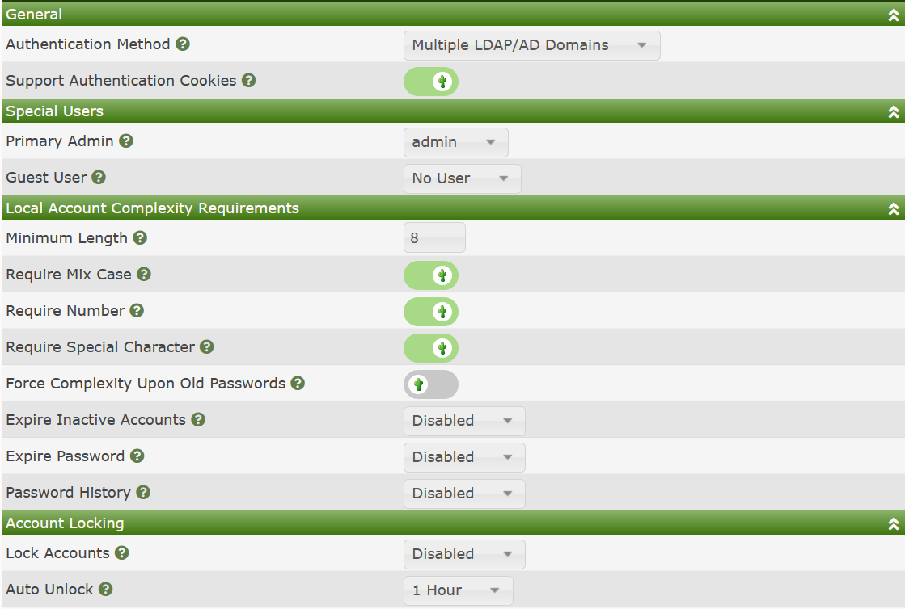

This Authentication method enables the Cacti Administrator to have multiple login level templates for their accounts. This could be used to grant users say for the following three login levels controlled by an LDAP or AD User Group:
To use the Multiple Domains setup, you must first setup at least one User Domains from the Cacti console. Once the Multiple LDAP/AD Domains are setup, all users will have to provide domain credentials as well as select from which domain they wish to authenticate from, though when enabling this settings, Built-in accounts will still be able to login, however, they will have to provide the Local option from the drop-down on the login page.
When you select the Multiple LDAP/AD Domains the Authentication sub-tab will look like the image below.

The reason that it shows settings for Built-in accounts is that you can still login as a local account when you choose this setting.
Copyright (c) 2004-2024 The Cacti Group